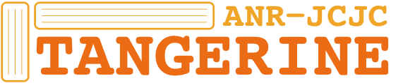

PROJECTS
An overview of the collaborative research projects I have been actively involved in.
Ongoing projects
| 2022 - 2025 | 5 partners | 1.9 M€
The AUDIBLE project aims to revolutionise hearable technologies (especially TWS/earbuds) by developing a platform which will enable unprecedented use cases through artificial intelligence (AI) innovations, a highly energy-efficient and powerful DSP and AI processor, and the integration of a miniaturized biometric sensor. Read More »
LISTEN | 2022 - | 4 partners |
LISTEN is a joint laboratory launched by Télécom Paris with Valeo, Bruitparif and Music World Media, to develop cutting edge machine listening methodologies and systems. The joint laboratory will focus its research efforts on five fundamental issues, frugal learning based on scarce data, multi-view, multi-task & distributed learning, model-based deep learning, self-supervised learning, and finally (deep) generative models. Read More »
DSAIDIS | 2019 - 2024 | 7 partners |
Data Science & Artificial Intelligence for Digitalized Industry & Services is Télécom Paris’s 15th Chair. Established for a five-year period with the help of the Fondation Mines-Télécom and the support of Airbus Defence & Space, Engie, Idemia, Safran and Valeo, it is held by Florence d’Alché-Buc, Full Professor at Télécom Paris in the fields of Computer Science and Applied Mathematics. It is concerned with: 1) developing predictive analytics on time series and data streams; 2) exploiting large scale, heterogeneous, partially labeled data; 3) machine learning for trusted and robust decision; 4) learning through interactions with the environment. Read More »
Past projects
AHEAD | 2018 - 2020 | 2 partners | 620 k€
AHEAD (Augmented HEADphones Experience) was a maturation project whose purpose was to develop an AI powered headphones system and audio infrastructure to offer spectators an immersive sound experience at sports events.
StaRel STIC AmSud network | 2017 - 2020 | 4 partners |
StaRel is an interdisciplinary research project which aimed to develop innovative technological and music-analytical methods to gain fresh insight into the understanding and modeling of the rhythmic/metrical structure in audio recordings of expressive music performances. The project brought together researchers from Télécom Paris; L2S, CNRS, France; Universidade Federal do Rio de Janeiro, Brazil; and Universidad de la Republica, Uruguay. Read More »
Research Chair | 2013 - 2018 | 5 partners | 1.5 M€
The Chair Machine Learning for Big data was a Télécom ParisTech Chair held by Stéphan Clémencon. It aimed at developing methodological research addressing the challenges posed by the statistical analysis of big data. Read More »
EU FP7 | 2014 - 2018 | 18 partners | 420 k€
LASIE (Large Scale Information Exploitation of Forensic Data) provided a set of tools and processes to support law enforcement agents and investigators or analysts in their everyday work. The proposed system significantly reduces the required investigation time by utilizing automatic processes for analysing multimedia contents, as well as visual analytics from an inference engine able to highlight otherwise hidden information. Read More »
SMART LABEX | 2013 - 2016 | 4 partners | 600 k€
SeNSE (Signaux Socio Emotionnels) was centered at the analysis of social and emotional signals exchanged during human-virtual agent and human-human interactions. Read More »
EU FP7 | 2011 - 2015 | 13 partners | 604 k€
The ultimate goal of REVERIE was to provide the means for building a mixed reality space in which real and virtual worlds engage and seamlessly interact in real-time, generating compelling and highly realistic immersive environments.
MEEGAPERF DGA - RAPID | 2011 - 2015 | 4 partners |
MEEGAPERF (Monitoring EEG pour l'Anticipation des PERFormances) was a French DGA-funded project that focuses on realtime human performance monitoring through EEG analysis.
EU FP7 | 2011 - 2014 | 8 partners | 300 k€
VERVE : Vanquishing fear and apathy through E-inclusion: Personalised and populated Realistic Virtual Environments for clinical, home and mobile platforms, will develop ICT tools to support the treatment of people who are at risk of social exclusion due to fear and/or apathy associated with a disability. These tools will be in the form of personalised Virtual Reality (VR) scenarios and serious games specifically designed for therapeutic targets and made broadly available via a novel integration of interactive 3D environments directly into Web browsers. The project will perform cutting edge research into rendering and simulating personalised and populated VR environments, 3D web graphics, and serious games. These technical efforts will be underpinned by clinical/laboratory and industry partners and in liaison with the stakeholders (i.e., participants, carers/family, and health professionals).
FP7 NoE | 2010 - 2013 | 7 partners | 415 k€
"Bringing the Media Internet to Life" - or simply, 3DLife - was a European Union funded project that aimed to integrate research conducted within Europe in the field of Media Internet. 3DLife's ultimate target was to lay the foundations of a European Competence Centre under the name "Excellence in Media Computing and Communication" or simply EMC2.
OSEO | 2008 - 2013 | 26 partners | 800 k€
Quaero was a collaborative research and development program, centered at developing multimedia and multilingual indexing and management tools for professional and general public applications such as the automatic analysis, classification, extraction and exploitation of information. The research aimed to facilitate the extraction of information in unlimited quantities of multimedia and multilingual documents, including written texts, speech and music audio files, and images and videos. Quaero was created to respond to new needs for the general public and professional use, and new challenges in multimedia content analysis resulting from the explosion of various information types and sources in digital form, available to everyone via personal computers, television and handheld terminals. Read More »
 ANR JC | 2009 - 2012 | 2 partners |
TANGERINE: Theory and applications of nonnegative matrix factorization, was a "young researcher" project funded by the French agency for research (ANR) and coordinated by Cédric Févotte. Read More »